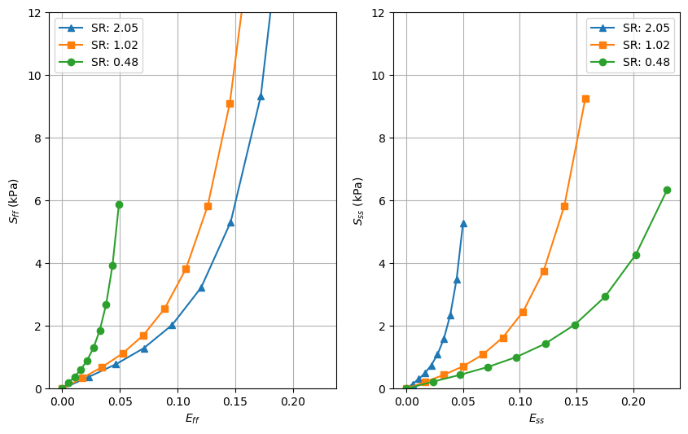

Biaxial stress test#
Attempt to reproduce Figure 8 in [1].
[1] Holzapfel, Gerhard A., and Ray W. Ogden. “Constitutive modelling of passive myocardium: a structurally based framework for material characterization. “Philosophical Transactions of the Royal Society of London A: Mathematical, Physical and Engineering Sciences 367.1902 (2009): 3445-3475.
import dolfin
import matplotlib.pyplot as plt
import numpy as np
try:
from dolfin_adjoint import (
Constant,
DirichletBC,
Expression,
UnitCubeMesh,
interpolate,
)
except ImportError:
from dolfin import (
Constant,
DirichletBC,
interpolate,
Expression,
UnitCubeMesh,
)
# -
import pulse
# Create mesh
N = 4
mesh = UnitCubeMesh(N, N, N)
# Create a facet fuction in order to mark the subdomains
ffun = dolfin.MeshFunction("size_t", mesh, 2)
ffun.set_all(0)
# Mark subdomains
xlow = dolfin.CompiledSubDomain("near(x[0], 0) && on_boundary")
xlow_marker = 1
xlow.mark(ffun, xlow_marker)
xhigh = dolfin.CompiledSubDomain("near(x[0], 1.0) && on_boundary")
xhigh_marker = 2
xhigh.mark(ffun, xhigh_marker)
ylow = dolfin.CompiledSubDomain("near(x[1], 0) && on_boundary")
ylow_marker = 3
ylow.mark(ffun, ylow_marker)
yhigh = dolfin.CompiledSubDomain("near(x[1], 1) && on_boundary")
yhigh_marker = 4
yhigh.mark(ffun, yhigh_marker)
center = dolfin.CompiledSubDomain(
"near(x[0], 0.5) && near(x[1], 0.5) && near(x[2], 0.5)",
)
center_marker = 5
center.mark(ffun, center_marker)
dolfin.File("ffun.pvd") << ffun
# Collect the functions containing the markers
marker_functions = pulse.MarkerFunctions(ffun=ffun)
# Create mictrotructure
V_f = dolfin.VectorFunctionSpace(mesh, "CG", 1)
# Fibers
f0 = interpolate(Expression(("1.0", "0.0", "0.0"), degree=1), V_f)
# Sheets
s0 = interpolate(Expression(("0.0", "1.0", "0.0"), degree=1), V_f)
# Fiber-sheet normal
n0 = interpolate(Expression(("0.0", "0.0", "1.0"), degree=1), V_f)
# Collect the mictrotructure
microstructure = pulse.Microstructure(f0=f0, s0=s0, n0=n0)
# Create the geometry
geometry = pulse.Geometry(
mesh=mesh,
marker_functions=marker_functions,
microstructure=microstructure,
)
# Use the default material parameters
material_parameters = {
"a": 2.28,
"b": 9.726,
"a_f": 1.685,
"b_f": 15.779,
"a_s": 0,
"a_fs": 0,
}
# Create material
material = pulse.HolzapfelOgden(parameters=material_parameters)
# Eff / Ess strain ratio
strain_ratio = Constant(1.0)
# Create costants defined for the dirichlet BC
u0 = Constant(0.0)
x_strain = u0 * strain_ratio / 2
y_strain = u0 * (1 / strain_ratio) / 2
# Make Dirichlet boundary conditions
def dirichlet_bc(W):
V = W if W.sub(0).num_sub_spaces() == 0 else W.sub(0)
return [
DirichletBC(V.sub(0), Constant(-x_strain), xlow),
DirichletBC(V.sub(0), Constant(x_strain), xhigh),
DirichletBC(V.sub(1), Constant(-y_strain), ylow),
DirichletBC(V.sub(1), Constant(y_strain), yhigh),
DirichletBC(V, np.zeros(3), center, method="pointwise"),
]
# Collect Boundary Conditions
bcs = pulse.BoundaryConditions(dirichlet=(dirichlet_bc,))
# Create problem
problem = pulse.MechanicsProblem(geometry, material, bcs)
# Solve problem
max_xi = [0.1, 0.15, 0.1]
data = {}
for i, sr in enumerate([2.05, 1.02, 0.48]):
strain_ratio.assign(sr)
Effs = []
Sffs = []
Esss = []
Ssss = []
for xi in np.linspace(0, max_xi[i], 10):
try:
pulse.iterate.iterate(problem, u0, Constant(xi), reinit_each_step=True)
except pulse.mechanicsproblem.SolverDidNotConverge:
continue
S = problem.SecondPiolaStress()
E = problem.GreenLagrangeStrain()
Sff = dolfin.assemble(dolfin.inner(f0, S * f0) * dolfin.dx)
Eff = dolfin.assemble(dolfin.inner(f0, E * f0) * dolfin.dx)
Effs.append(Eff)
Sffs.append(Sff)
Sss = dolfin.assemble(dolfin.inner(s0, S * s0) * dolfin.dx)
Ess = dolfin.assemble(dolfin.inner(s0, E * s0) * dolfin.dx)
Esss.append(Ess)
Ssss.append(Sss)
u, p = problem.state.split(deepcopy=True)
data[sr] = {"Eff": Effs, "Sff": Sffs, "Ess": Esss, "Sss": Ssss}
2024-04-11 13:23:05,768 [287] INFO pulse.iterate: Iterating to target control (f_31)...
2024-04-11 13:23:05,769 [287] INFO pulse.iterate: Current control: f_31 = 0.000
2024-04-11 13:23:05,770 [287] INFO pulse.iterate: Target: 0.000
2024-04-11 13:23:05,895 [287] INFO UFL_LEGACY: Adjusting missing element cell to tetrahedron.
2024-04-11 13:23:05,896 [287] INFO UFL_LEGACY: Adjusting missing element cell to tetrahedron.
2024-04-11 13:23:05,896 [287] INFO UFL_LEGACY: Adjusting missing element cell to tetrahedron.
2024-04-11 13:23:05,897 [287] INFO UFL_LEGACY: Adjusting missing element cell to tetrahedron.
2024-04-11 13:23:05,897 [287] INFO UFL_LEGACY: Adjusting missing element cell to tetrahedron.
2024-04-11 13:23:05,898 [287] INFO UFL_LEGACY: Adjusting missing element cell to tetrahedron.
2024-04-11 13:23:06,075 [287] DEBUG UFL_LEGACY: Blocks of each mode:
1 full
2024-04-11 13:23:17,007 [287] DEBUG UFL_LEGACY: Blocks of each mode:
1 full
2024-04-11 13:23:17,480 [287] INFO UFL_LEGACY: Adjusting missing element cell to tetrahedron.
2024-04-11 13:23:17,481 [287] INFO UFL_LEGACY: Adjusting missing element cell to tetrahedron.
2024-04-11 13:23:17,482 [287] INFO UFL_LEGACY: Adjusting missing element cell to tetrahedron.
2024-04-11 13:23:17,482 [287] INFO UFL_LEGACY: Adjusting missing element cell to tetrahedron.
2024-04-11 13:23:17,483 [287] INFO UFL_LEGACY: Adjusting missing element cell to tetrahedron.
2024-04-11 13:23:17,483 [287] INFO UFL_LEGACY: Adjusting missing element cell to tetrahedron.
2024-04-11 13:23:17,698 [287] DEBUG UFL_LEGACY: Blocks of each mode:
1 full
2024-04-11 13:23:18,320 [287] INFO pulse.iterate: Iterating to target control (f_31)...
2024-04-11 13:23:18,321 [287] INFO pulse.iterate: Current control: f_31 = 0.000
2024-04-11 13:23:18,322 [287] INFO pulse.iterate: Target: 0.011
2024-04-11 13:23:18,376 [287] INFO UFL_LEGACY: Adjusting missing element cell to tetrahedron.
2024-04-11 13:23:18,377 [287] INFO UFL_LEGACY: Adjusting missing element cell to tetrahedron.
2024-04-11 13:23:18,377 [287] INFO UFL_LEGACY: Adjusting missing element cell to tetrahedron.
2024-04-11 13:23:18,378 [287] INFO UFL_LEGACY: Adjusting missing element cell to tetrahedron.
2024-04-11 13:23:18,378 [287] INFO UFL_LEGACY: Adjusting missing element cell to tetrahedron.
2024-04-11 13:23:18,379 [287] INFO UFL_LEGACY: Adjusting missing element cell to tetrahedron.
2024-04-11 13:23:18,850 [287] DEBUG UFL_LEGACY: Blocks of each mode:
99 full
2024-04-11 13:24:09,689 [287] INFO UFL_LEGACY: Adjusting missing element cell to tetrahedron.
2024-04-11 13:24:09,690 [287] INFO UFL_LEGACY: Adjusting missing element cell to tetrahedron.
2024-04-11 13:24:09,691 [287] INFO UFL_LEGACY: Adjusting missing element cell to tetrahedron.
2024-04-11 13:24:09,692 [287] INFO UFL_LEGACY: Adjusting missing element cell to tetrahedron.
2024-04-11 13:24:09,692 [287] INFO UFL_LEGACY: Adjusting missing element cell to tetrahedron.
2024-04-11 13:24:09,693 [287] INFO UFL_LEGACY: Adjusting missing element cell to tetrahedron.
2024-04-11 13:24:09,829 [287] DEBUG UFL_LEGACY: Blocks of each mode:
10 full
2024-04-11 13:24:11,139 [287] INFO pulse.iterate: Iterating to target control (f_31)...
2024-04-11 13:24:11,140 [287] INFO pulse.iterate: Current control: f_31 = 0.011
2024-04-11 13:24:11,140 [287] INFO pulse.iterate: Target: 0.022
2024-04-11 13:24:11,752 [287] INFO pulse.iterate: Iterating to target control (f_31)...
2024-04-11 13:24:11,753 [287] INFO pulse.iterate: Current control: f_31 = 0.022
2024-04-11 13:24:11,753 [287] INFO pulse.iterate: Target: 0.033
2024-04-11 13:24:12,369 [287] INFO pulse.iterate: Iterating to target control (f_31)...
2024-04-11 13:24:12,369 [287] INFO pulse.iterate: Current control: f_31 = 0.033
2024-04-11 13:24:12,370 [287] INFO pulse.iterate: Target: 0.044
2024-04-11 13:24:12,990 [287] INFO pulse.iterate: Iterating to target control (f_31)...
2024-04-11 13:24:12,990 [287] INFO pulse.iterate: Current control: f_31 = 0.044
2024-04-11 13:24:12,991 [287] INFO pulse.iterate: Target: 0.056
2024-04-11 13:24:13,613 [287] INFO pulse.iterate: Iterating to target control (f_31)...
2024-04-11 13:24:13,614 [287] INFO pulse.iterate: Current control: f_31 = 0.056
2024-04-11 13:24:13,615 [287] INFO pulse.iterate: Target: 0.067
2024-04-11 13:24:14,238 [287] INFO pulse.iterate: Iterating to target control (f_31)...
2024-04-11 13:24:14,238 [287] INFO pulse.iterate: Current control: f_31 = 0.067
2024-04-11 13:24:14,239 [287] INFO pulse.iterate: Target: 0.078
2024-04-11 13:24:14,861 [287] INFO pulse.iterate: Iterating to target control (f_31)...
2024-04-11 13:24:14,862 [287] INFO pulse.iterate: Current control: f_31 = 0.078
2024-04-11 13:24:14,863 [287] INFO pulse.iterate: Target: 0.089
2024-04-11 13:24:15,485 [287] INFO pulse.iterate: Iterating to target control (f_31)...
2024-04-11 13:24:15,486 [287] INFO pulse.iterate: Current control: f_31 = 0.089
2024-04-11 13:24:15,486 [287] INFO pulse.iterate: Target: 0.100
2024-04-11 13:24:16,177 [287] INFO pulse.iterate: Iterating to target control (f_31)...
2024-04-11 13:24:16,177 [287] INFO pulse.iterate: Current control: f_31 = 0.100
2024-04-11 13:24:16,178 [287] INFO pulse.iterate: Target: 0.000
2024-04-11 13:24:17,060 [287] INFO pulse.iterate: Iterating to target control (f_31)...
2024-04-11 13:24:17,061 [287] INFO pulse.iterate: Current control: f_31 = 0.000
2024-04-11 13:24:17,061 [287] INFO pulse.iterate: Target: 0.017
2024-04-11 13:24:17,670 [287] INFO pulse.iterate: Iterating to target control (f_31)...
2024-04-11 13:24:17,671 [287] INFO pulse.iterate: Current control: f_31 = 0.017
2024-04-11 13:24:17,672 [287] INFO pulse.iterate: Target: 0.033
2024-04-11 13:24:18,283 [287] INFO pulse.iterate: Iterating to target control (f_31)...
2024-04-11 13:24:18,284 [287] INFO pulse.iterate: Current control: f_31 = 0.033
2024-04-11 13:24:18,284 [287] INFO pulse.iterate: Target: 0.050
2024-04-11 13:24:18,896 [287] INFO pulse.iterate: Iterating to target control (f_31)...
2024-04-11 13:24:18,897 [287] INFO pulse.iterate: Current control: f_31 = 0.050
2024-04-11 13:24:18,898 [287] INFO pulse.iterate: Target: 0.067
2024-04-11 13:24:19,512 [287] INFO pulse.iterate: Iterating to target control (f_31)...
2024-04-11 13:24:19,513 [287] INFO pulse.iterate: Current control: f_31 = 0.067
2024-04-11 13:24:19,513 [287] INFO pulse.iterate: Target: 0.083
2024-04-11 13:24:20,128 [287] INFO pulse.iterate: Iterating to target control (f_31)...
2024-04-11 13:24:20,128 [287] INFO pulse.iterate: Current control: f_31 = 0.083
2024-04-11 13:24:20,129 [287] INFO pulse.iterate: Target: 0.100
2024-04-11 13:24:20,740 [287] INFO pulse.iterate: Iterating to target control (f_31)...
2024-04-11 13:24:20,740 [287] INFO pulse.iterate: Current control: f_31 = 0.100
2024-04-11 13:24:20,741 [287] INFO pulse.iterate: Target: 0.117
2024-04-11 13:24:21,351 [287] INFO pulse.iterate: Iterating to target control (f_31)...
2024-04-11 13:24:21,352 [287] INFO pulse.iterate: Current control: f_31 = 0.117
2024-04-11 13:24:21,352 [287] INFO pulse.iterate: Target: 0.133
2024-04-11 13:24:21,966 [287] INFO pulse.iterate: Iterating to target control (f_31)...
2024-04-11 13:24:21,966 [287] INFO pulse.iterate: Current control: f_31 = 0.133
2024-04-11 13:24:21,967 [287] INFO pulse.iterate: Target: 0.150
2024-04-11 13:24:22,645 [287] INFO pulse.iterate: Iterating to target control (f_31)...
2024-04-11 13:24:22,646 [287] INFO pulse.iterate: Current control: f_31 = 0.150
2024-04-11 13:24:22,646 [287] INFO pulse.iterate: Target: 0.000
2024-04-11 13:24:23,518 [287] INFO pulse.iterate: Iterating to target control (f_31)...
2024-04-11 13:24:23,519 [287] INFO pulse.iterate: Current control: f_31 = 0.000
2024-04-11 13:24:23,520 [287] INFO pulse.iterate: Target: 0.011
2024-04-11 13:24:24,136 [287] INFO pulse.iterate: Iterating to target control (f_31)...
2024-04-11 13:24:24,136 [287] INFO pulse.iterate: Current control: f_31 = 0.011
2024-04-11 13:24:24,137 [287] INFO pulse.iterate: Target: 0.022
2024-04-11 13:24:24,747 [287] INFO pulse.iterate: Iterating to target control (f_31)...
2024-04-11 13:24:24,747 [287] INFO pulse.iterate: Current control: f_31 = 0.022
2024-04-11 13:24:24,748 [287] INFO pulse.iterate: Target: 0.033
2024-04-11 13:24:25,364 [287] INFO pulse.iterate: Iterating to target control (f_31)...
2024-04-11 13:24:25,365 [287] INFO pulse.iterate: Current control: f_31 = 0.033
2024-04-11 13:24:25,365 [287] INFO pulse.iterate: Target: 0.044
2024-04-11 13:24:25,977 [287] INFO pulse.iterate: Iterating to target control (f_31)...
2024-04-11 13:24:25,977 [287] INFO pulse.iterate: Current control: f_31 = 0.044
2024-04-11 13:24:25,978 [287] INFO pulse.iterate: Target: 0.056
2024-04-11 13:24:26,591 [287] INFO pulse.iterate: Iterating to target control (f_31)...
2024-04-11 13:24:26,592 [287] INFO pulse.iterate: Current control: f_31 = 0.056
2024-04-11 13:24:26,593 [287] INFO pulse.iterate: Target: 0.067
2024-04-11 13:24:27,207 [287] INFO pulse.iterate: Iterating to target control (f_31)...
2024-04-11 13:24:27,208 [287] INFO pulse.iterate: Current control: f_31 = 0.067
2024-04-11 13:24:27,208 [287] INFO pulse.iterate: Target: 0.078
2024-04-11 13:24:27,821 [287] INFO pulse.iterate: Iterating to target control (f_31)...
2024-04-11 13:24:27,822 [287] INFO pulse.iterate: Current control: f_31 = 0.078
2024-04-11 13:24:27,823 [287] INFO pulse.iterate: Target: 0.089
2024-04-11 13:24:28,439 [287] INFO pulse.iterate: Iterating to target control (f_31)...
2024-04-11 13:24:28,440 [287] INFO pulse.iterate: Current control: f_31 = 0.089
2024-04-11 13:24:28,440 [287] INFO pulse.iterate: Target: 0.100
fig, ax = plt.subplots(1, 2, figsize=(10, 6))
markers = ["^", "s", "o"]
for i, (sr, v) in enumerate(data.items()):
ax[0].plot(v["Eff"], v["Sff"], marker=markers[i], label=f"SR: {sr:.2f}")
ax[1].plot(v["Ess"], v["Sss"], marker=markers[i], label=f"SR: {sr:.2f}")
ax[0].set_ylabel("$S_{ff}$ (kPa)")
ax[1].set_ylabel("$S_{ss}$ (kPa)")
ax[0].set_xlabel("$E_{ff}$")
ax[1].set_xlabel("$E_{ss}$")
for axi in ax:
axi.legend()
axi.set_ylim(0, 12)
axi.grid()
plt.show()
